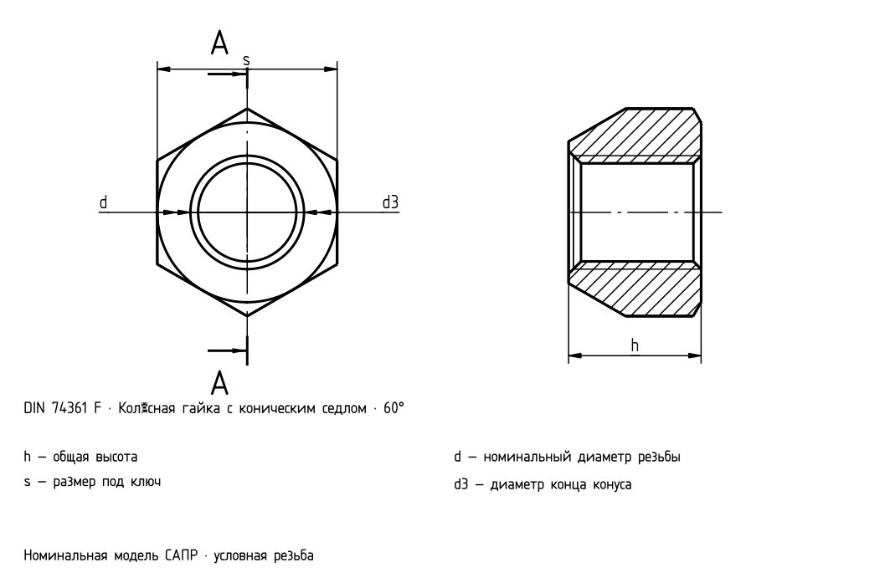

Гайки с коническим седлом

DIN 74361 F
| d | P [mm] | s [mm] | h5 [mm] | d3 [mm] | d4 [mm] | α [°] |
|---|---|---|---|---|---|---|
| M12×1,5 | 1,5 | 19 | 14 | 15 | 13 | 60 |
| M12×1,5 | 1,5 | 19 | 14 | 15 | 13 | 90 |

| d | P [mm] | s [mm] | h5 [mm] | d3 [mm] | d4 [mm] | α [°] |
|---|---|---|---|---|---|---|
| M12×1,5 | 1,5 | 19 | 14 | 15 | 13 | 60 |
| M12×1,5 | 1,5 | 19 | 14 | 15 | 13 | 90 |